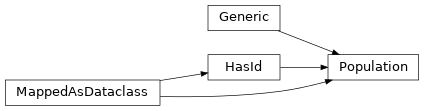

ea
Everything related to Evolutionary Algorithms.
Subpackages
Package Contents
Classes
Generic SQLAlchemy model for a generation. |
|
Generic SQLAlchemy model for an individual. |
|
An SQLAlchemy mixing that provides a parameters column that is a tuple of floats. |
|
Generic SQLAlchemy model for a population. |
- class Generation
Bases:
experimentation.database.HasId,sqlalchemy.orm.MappedAsDataclass,Generic[TPopulation]
Generic SQLAlchemy model for a generation.
Inherit from this to create your own generation type and table.
The generic parameter TPopulation refers to the user-defined population type. This parameter cannot be a forward reference.
For example:
class MyGeneration(Base, Generation[MyPopulation]): __tablename__ = "my_generation"
- classmethod __init_subclass__(/, **kwargs: dict[str, Any]) None
Initialize a version of this class when it is subclassed.
Gets the actual type of TPopulation and stores it for later use. :param kwargs: Remaining arguments passed to super.
- class Individual
Bases:
experimentation.database.HasId,sqlalchemy.orm.MappedAsDataclass,Generic[TGenotype]
Generic SQLAlchemy model for an individual.
Inherit from this to create your own individual type.
This class is designed to be part of a Population. The metaclass argument population_table must contain the name of the population table.
The generic parameter TGenotype refers to the user-defined genotype type, which should have an id field that will be used as a foreign key reference. This parameter cannot be a forward reference.
For example:
class MyIndividual(Base, Individual[MyGenotype], population_table="my_population"): __tablename__ = "my_individual"
- classmethod __init_subclass__(population_table: str, **kwargs: dict[str, Any]) None
Initialize a version of this class when it is subclassed.
Gets the actual type of TGenotype and value of population_table and stores them for later use.
- Parameters:
population_table – Name of the population table.
kwargs – Remaining arguments passed to super.
- class Parameters
Bases:
sqlalchemy.orm.MappedAsDataclassAn SQLAlchemy mixing that provides a parameters column that is a tuple of floats.
The parameters are saved in the database as string of semicolon seperated floats.
- parameters: numpy.typing.NDArray[numpy.float_]
- class Population
Bases:
experimentation.database.HasId,sqlalchemy.orm.MappedAsDataclass,Generic[TIndividual]Generic SQLAlchemy model for a population.
Inherit from this to create your own population type.
The generic parameter TIndividual refers to the user-defined individual type. This parameter cannot be a forward reference.
For example:
class MyPopulation(Base, Population[MyIndividual]): __tablename__ = "my_population"
- classmethod __init_subclass__(/, **kwargs: dict[str, Any]) None
Initialize a version of this class when it is subclassed.
Gets the actual type of TIndividual and stores it for later use.
- Parameters:
kwargs – Remaining arguments passed to super.